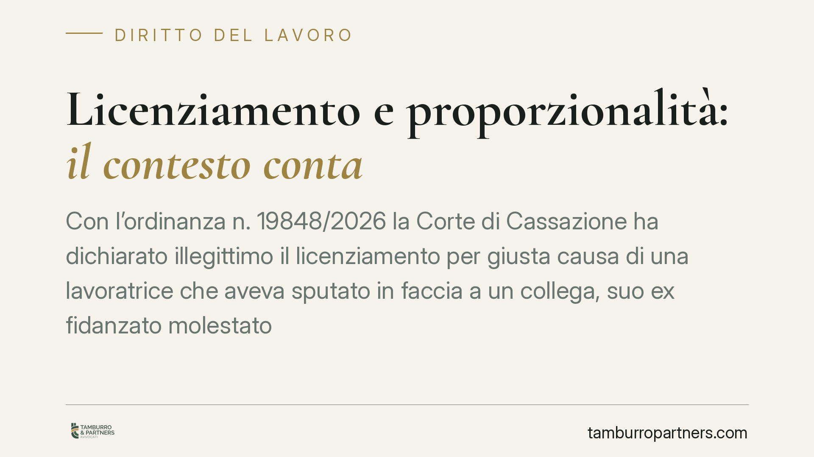

Licenziamento e proporzionalità: il contesto conta
Con l'ordinanza n. 19848/2026 la Corte di Cassazione ha dichiarato illegittimo il licenziamento per giusta causa di una lavoratrice che aveva sputato in faccia a un collega, suo ex fidanzato molestatore. La valutazione sulla proporzionalità della sanzione disciplinare, chiariscono i giudici, non può prescindere dal contesto e dalla condotta provocatoria della controparte.

Il caso
Una dipendente viene licenziata in tronco per aver sputato in faccia a un collega. Un gesto che, isolatamente considerato, integra una condotta aggressiva sul luogo di lavoro. Ma il collega non era un collega qualunque: era l'ex fidanzato della lavoratrice, autore di comportamenti molesti nei suoi confronti.
La Corte di Cassazione, con l'ordinanza n. 19848/2026, ha ritenuto illegittimo il recesso. Il punto non è negare che il gesto sia riprovevole, ma stabilire se giustifichi la sanzione più grave prevista dall'ordinamento: il licenziamento per giusta causa.
Inquadramento normativo
Il licenziamento per giusta causa è disciplinato dall'art. 2119 cod. civ., che consente il recesso immediato "qualora si verifichi una causa che non consenta la prosecuzione, anche provvisoria, del rapporto". Si tratta di una formula volutamente elastica, che impone al giudice una valutazione caso per caso.
La giurisprudenza ha da tempo chiarito che la giusta causa non coincide con la mera illiceità del comportamento. Occorre un giudizio di proporzionalità: la sanzione deve essere adeguata alla gravità concreta del fatto. In questa valutazione rientrano l'intensità dell'elemento soggettivo (dolo o colpa), le circostanze in cui il fatto è maturato e, soprattutto, l'incidenza sul vincolo fiduciario che lega datore e lavoratore.
La Cassazione, nell'ordinanza in commento, aggiunge un tassello: tra le circostanze da ponderare rientra anche la condotta concausale della controparte. Se il gesto nasce come reazione a molestie reiterate, quel contesto non può essere espunto dal giudizio di proporzionalità.
Cosa cambia in concreto
La decisione incide su entrambi i lati del rapporto di lavoro.
Per il datore di lavoro, il messaggio è netto: non basta accertare la materialità di un gesto violento per procedere al licenziamento. Prima di irrogare la sanzione espulsiva occorre ricostruire il quadro completo, compresa l'eventuale provocazione subita dal lavoratore. Un recesso adottato senza questa istruttoria è esposto ad annullamento, con le conseguenze economiche connesse (reintegra o indennità risarcitoria, a seconda del regime applicabile).
Per il lavoratore, la pronuncia conferma che una reazione, anche fisica, a condotte moleste subite sul luogo di lavoro non equivale automaticamente a un giusto motivo di espulsione. Resta ferma la necessità di documentare le molestie e il nesso tra queste e la reazione.
Per chi si occupa di ambiente di lavoro e benessere organizzativo, la vicenda richiama un dovere spesso trascurato: il datore è tenuto a tutelare l'integrità fisica e morale dei dipendenti (art. 2087 cod. civ.). Ignorare segnalazioni di molestie può trasformare l'azienda da garante a corresponsabile del clima che ha generato il conflitto.
Cosa fare in concreto
- Istruite il procedimento disciplinare in modo completo. Prima di contestare l'addebito, ricostruite il contesto: rapporti pregressi tra i soggetti coinvolti, eventuali segnalazioni, precedenti.
- Graduate la sanzione. Verificate se misure intermedie (sospensione, richiamo) siano adeguate al caso prima di optare per il licenziamento.
- Gestite tempestivamente le segnalazioni di molestie. Attivate canali interni e date seguito documentato, in attuazione dell'obbligo di cui all'art. 2087 cod. civ.
- Conservate la documentazione. Chat, email, testimonianze: sono spesso decisive per ricostruire la condotta concausale.
- Valutate l'opzione legale in anticipo. Consigliamo di sottoporre a verifica i casi di maggiore delicatezza prima di adottare provvedimenti espulsivi.
In sintesi
La proporzionalità non è un formalismo: è il cuore del giudizio sulla legittimità del licenziamento. Un gesto grave può non giustificare la sanzione più severa se maturato in un contesto di provocazione. Per le aziende, la lezione è investire sull'istruttoria disciplinare; per i lavoratori, documentare ogni passaggio.
---
*Contributo informativo a cura di Tamburro & Partners - Avv. Giuseppe Tamburro. Non costituisce parere legale.*
Ogni storia di lavoro ha i suoi tempi.
Se gestisci HR e vuoi un confronto su contenzioso, ispezioni o licenziamenti, scrivi allo studio. Ti rispondiamo entro un giorno lavorativo.